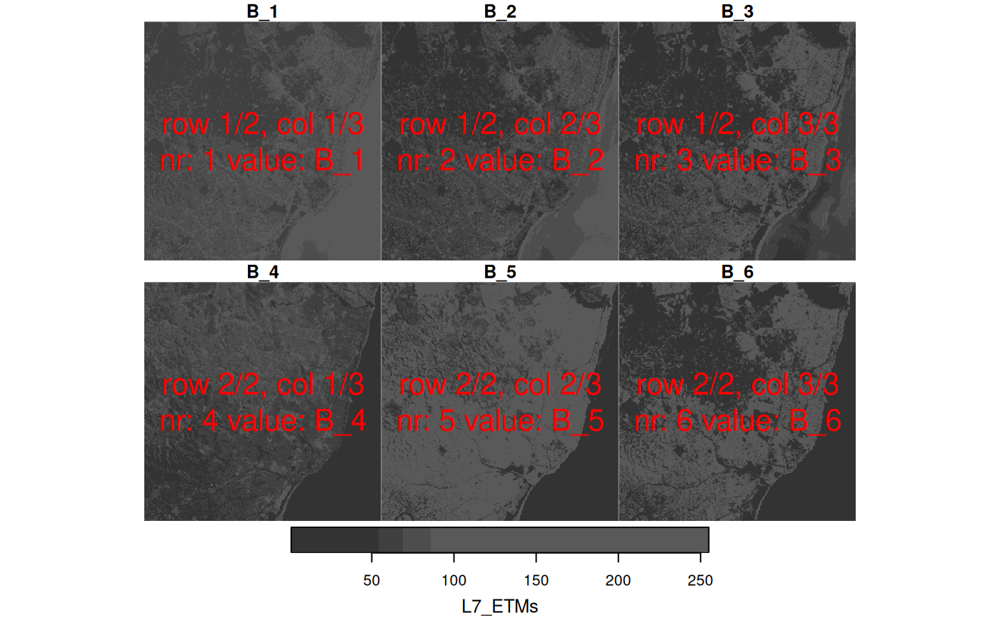

plot stars object, with subplots for each level of first non-spatial dimension
Source:R/plot.R, R/proxy.R
plot.Rdplot stars object, with subplots for each level of first non-spatial dimension, and customization of legend key
# S3 method for stars plot( x, y, ..., join_zlim = TRUE, main = make_label(x, 1), axes = FALSE, downsample = TRUE, nbreaks = 11, breaks = "quantile", col = grey(1:(nbreaks - 1)/nbreaks), key.pos = get_key_pos(x, ...), key.width = lcm(1.8), key.length = 0.618, reset = TRUE, box_col = grey(0.8), center_time = FALSE, hook = NULL ) # S3 method for stars image( x, ..., band = 1, attr = 1, asp = NULL, rgb = NULL, maxColorValue = ifelse(inherits(rgb, "data.frame"), 255, max(x[[attr]], na.rm = TRUE)), xlab = if (!axes) "" else names(d)[1], ylab = if (!axes) "" else names(d)[2], xlim = st_bbox(x)$xlim, ylim = st_bbox(x)$ylim, text_values = FALSE, axes = FALSE, interpolate = FALSE, as_points = FALSE, key.pos = NULL, logz = FALSE, key.width = lcm(1.8), key.length = 0.618, add.geom = NULL, border = NA, useRaster = dev.capabilities("rasterImage")$rasterImage == "yes" ) # S3 method for stars_proxy plot(x, y, ..., downsample = get_downsample(dim(x)))
Arguments
| x | object of class |
|---|---|
| y | ignored |
| ... | further arguments: for |
| join_zlim | logical; if |
| main | character; subplot title prefix; use |
| axes | logical; should axes and box be added to the plot? |
| downsample | logical or numeric; if |
| nbreaks | number of color breaks; should be one more than number of colors. If missing and |
| breaks | actual color breaks, or a method name used for classIntervals. |
| col | colors to use for grid cells |
| key.pos | integer; side to plot a color key: 1 bottom, 2 left, 3 top, 4 right; set to |
| key.width | amount of space reserved for width of the key (labels); relative or absolute (using lcm) |
| key.length | amount of space reserved for length of the key (labels); relative or absolute (using lcm) |
| reset | logical; if |
| box_col | color for box around sub-plots; use |
| center_time | logical; if |
| hook | NULL or function; hook function that will be called on every sub-plot. |
| band | integer; which band (dimension) to plot |
| attr | integer; which attribute to plot |
| asp | numeric; aspect ratio of image |
| rgb | integer; specify three bands to form an rgb composite. Experimental: rgb color table; see Details. |
| maxColorValue | numeric; passed on to rgb |
| xlab | character; x axis label |
| ylab | character; y axis label |
| xlim | x axis limits |
| ylim | y axis limits |
| text_values | logical; print values as text on image? |
| interpolate | logical; when using rasterImage (rgb), should pixels be interpolated? |
| as_points | logical; for curvilinear or sheared grids: parameter passed on to st_as_sf, determining whether raster cells will be plotted as symbols (fast, approximate) or small polygons (slow, exact) |
| logz | logical; if |
| add.geom | object of class |
| border | color used for cell borders (only in case |
| useRaster | logical; use the rasterImage capabilities of the graphics device? |
Details
Downsampling: a value for downsample of 0 or 1 causes no downsampling, 2 that every second dimension value is sampled, 3 that every third dimension value is sampled, and so on.
use of an rgb color table is experimental; see https://github.com/r-spatial/mapview/issues/208
when plotting a subsetted stars_proxy object, the default value for argument downsample will not be computed correctly, and it and has to be set manually.
Examples
tif = system.file("tif/L7_ETMs.tif", package = "stars") x = read_stars(tif) image(x, col = grey((3:9)/10))